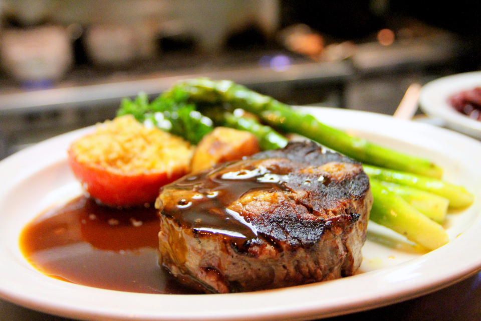
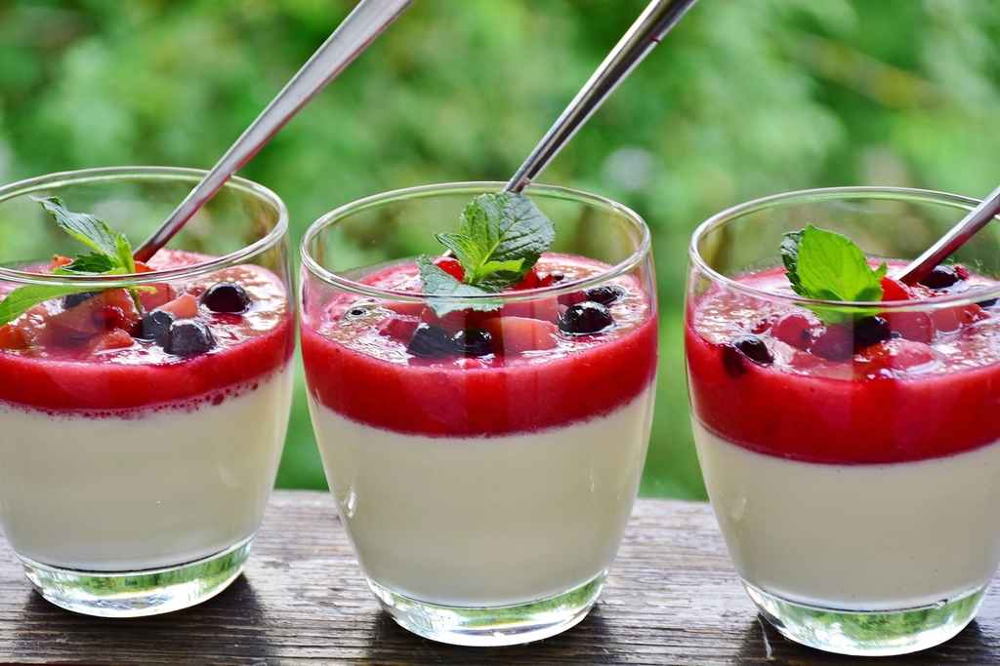

Our Dishes
お料理
近江の実りと、仏蘭西の手仕事で仕立てる一皿。


Local Ingredients
近江牛について
近江牛は、滋賀県を代表するブランド牛として知られています。当店では、ビストロらしい技法でこの近江牛を仕立てたお料理をご用意されているようです。
琵琶湖の幸について
鮎や鴨など、琵琶湖やその周辺でとれる食材も、滋賀県の食文化を支えてきたものとして知られています。季節に応じて、こうした湖国の恵みを取り入れたお料理も登場するようです。
仕入れ状況によりメニュー内容は変わります。最新のお品書き・価格については、お電話(0748-33-2557)にて店舗へ直接お問い合わせください。